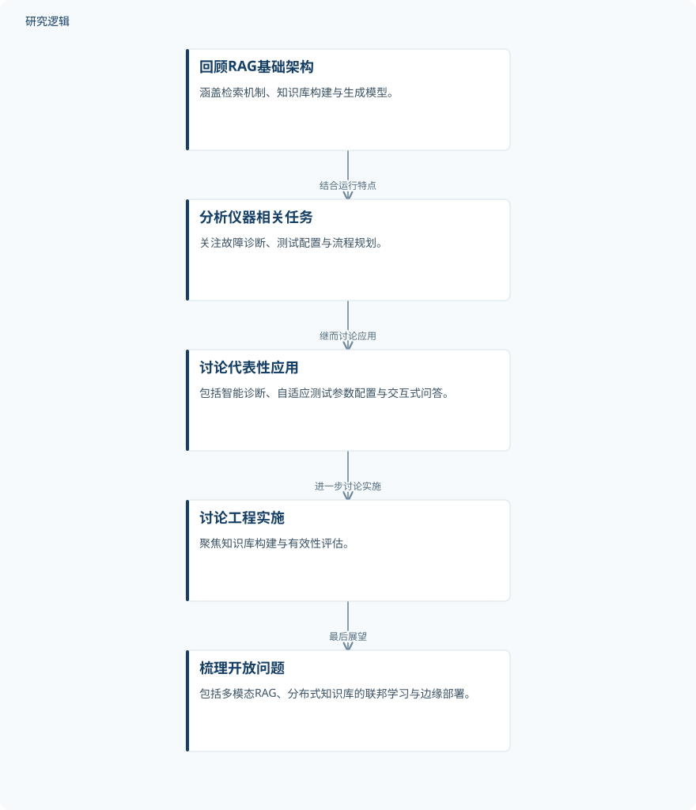

摘要解读
检索增强生成在电子测试仪器领域的应用与发展
Retrieval-Augmented Generation Applications and Development in the Field of Electronic Test Instruments
解读更新 2026-11-10 13:44 · 依据公开摘要整理，未核验全文细节
电子测试仪器的故障诊断、测试配置与流程规划，如何借助大语言模型和外部知识获得智能支持？这篇综述围绕检索增强生成（RAG）梳理技术架构、应用场景与工程问题，其阅读价值在于建立领域认识，而非提供已经验证的性能结论。
文章目录
仪器运维为何需要连接外部知识
电子测试仪器与自动测试系统（ATS）的运行维护涉及知识密集型任务。摘要将大语言模型的推理与生成能力，以及外部知识库的时效性与准确性，视为可以结合的能力来源，并据此讨论RAG在该领域的应用潜力。
这里的研究对象并非单一故障识别算法，而是RAG如何服务仪器使用与维护中的不同任务。故障诊断、测试配置和流程规划，共同构成了这篇综述的应用背景。
从RAG架构梳理到工程实施议题
本文采用综述形式：先回顾RAG的基础架构，涵盖检索机制、知识库构建和生成模型；再结合电子测试仪器与自动测试系统的运行特点，分析相关知识密集型任务，并讨论代表性应用。
随后，文章围绕知识库构建与有效性评估讨论工程实施中的实际考量，最后梳理开放问题及未来方向。摘要未说明文献检索策略、纳入标准或综述覆盖范围，因此不能据此将其认定为系统性文献综述。
依据摘要整理的综述展开顺序


仅呈现摘要明确说明的综述组织关系，不代表实验流程或已经验证的系统架构。
下载 SVG图示关系说明
实线表示相邻阶段的信息流，虚线表示跨阶段联系或反馈。
回顾RAG基础架构 → 分析仪器相关任务：结合运行特点；分析仪器相关任务 → 讨论代表性应用：继而讨论应用；讨论代表性应用 → 讨论工程实施：进一步讨论实施；讨论工程实施 → 梳理开放问题：最后展望
应用讨论覆盖诊断、参数配置与交互问答
摘要呈现的主要内容是应用与问题的梳理：代表性应用包括智能故障诊断系统、自适应测试参数配置，以及交互式问答助手。这些内容说明了综述关注的应用类型，但不等于本文已经实现并验证了这些系统。
文章还将多模态RAG、面向分布式知识库的联邦学习，以及边缘部署列为开放问题和未来研究方向。这些属于前景讨论，而非摘要报告的已验证效果。
摘要不足以判断应用效果与验证边界
仅据本次摘要，无法判断所讨论应用的数据来源、样本规模、仪器类型、比较基线、评价指标及验证范围，也无法确认不同应用的成熟程度。摘要没有给出量化性能结果，因而不宜推断诊断准确率、配置效率或部署收益。
这些是当前摘要信息的边界，并不意味着论文没有讨论相应内容。本文解读仅依据提供的完整摘要，不代表已经阅读全文。
阅读启发：关注知识如何进入仪器运维任务
阅读启发：后续阅读可围绕一个具体问题展开——面对故障诊断、参数配置和问答等不同任务，知识库构建与有效性评估分别需要关注什么？这一问题直接对应摘要的工程议题，也有助于区分应用设想与已有证据。
建议将多模态、分布式知识库和边缘部署作为进一步阅读的线索，重点核对各方向针对的实际需求、适用条件与证据范围，而不把方向名称本身视为效果保证。
以上为本站阅读启发与建议，不是论文已验证的结论。